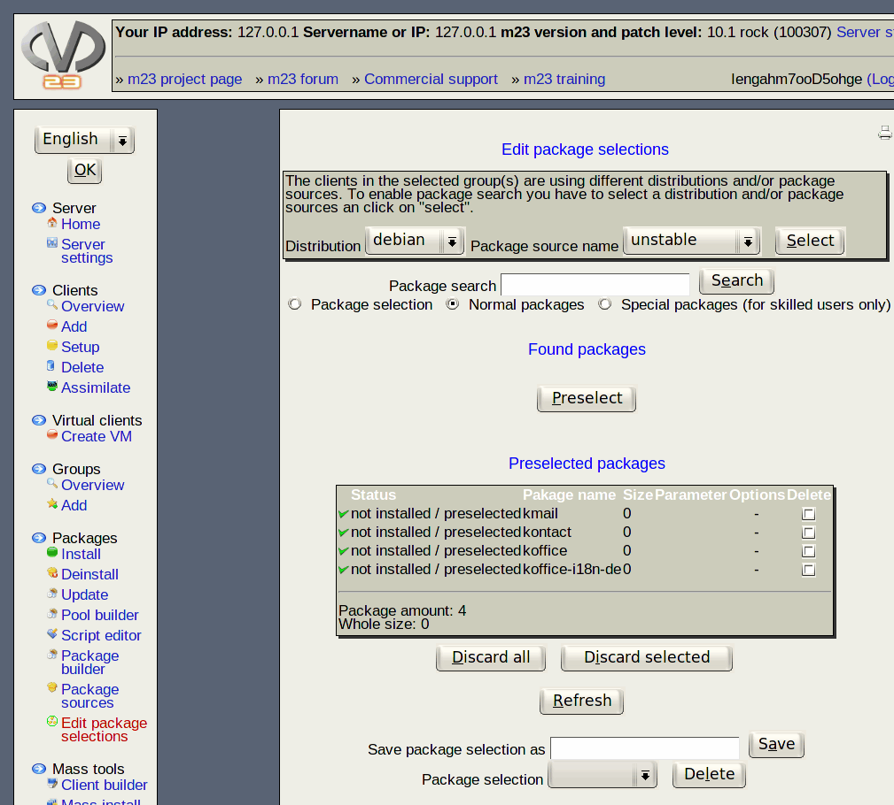

Next:
Step by step
Up:
Packages
Previous:
Hint
Contents
Edit package selections
In this dialog you can edit or delete existing and create new package selections.

Subsections
Step by step
Deletion of selection
Im/Export selected packages
Hint
root 2015-04-30